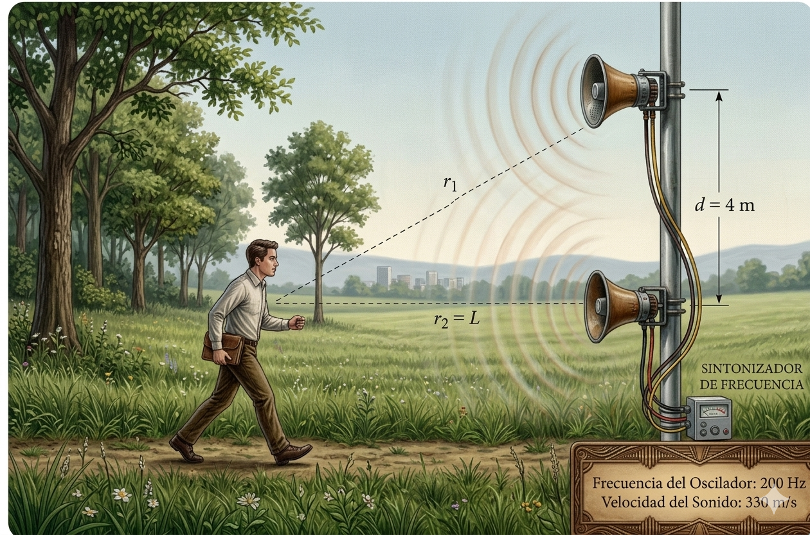

INTERFERENCIA
DE ONDAS
Índice de Contenidos
Principio de Superposición
El principio de superposición establece que cuando dos o más perturbaciones ondulatorias coinciden en un mismo punto del espacio, el desplazamiento resultante es la suma algebraica de los desplazamientos individuales:
Este principio es válido para ondas de pequeña amplitud en medios lineales. La mayoría de ondas mecánicas y electromagnéticas satisfacen esta condición.
Consideremos dos fuentes puntuales \(F_1\) y \(F_2\) que oscilan en fase con frecuencia angular \(\omega\) y longitud de onda \(\lambda\):
\(k = 2\pi/\lambda\): número de onda (rad/m), \(\omega = 2\pi f\): frecuencia angular (rad/s), \(r_1, r_2\): distancias al punto P (m).
Superposición vs. Interferencia
La superposición es el principio matemático (sumar ondas). La interferencia es el fenómeno físico resultante: patrones de refuerzo o cancelación en el espacio.
Ejemplos cotidianos
Dos piedras en un lago generan ondas circulares que se superponen creando zonas de mayor agitación y zonas de calma. Dos altavoces reproduciendo la misma señal producen posiciones de sonido intenso y otras donde se anula.
📌 «La perturbación total en cualquier punto es la suma algebraica de las perturbaciones individuales.»
Interferencia Constructiva y Destructiva
La amplitud resultante de dos ondas coherentes superpuestas es:
Diferencia de camino y fase
\(\Delta L = |r_1 - r_2|\): diferencia de camino (m), \(\Delta\varphi\): diferencia de fase (rad).
Constructiva: \(\Delta\varphi = 2\pi n \implies \Delta L = n\lambda\) → \(A_{\max} = A_1 + A_2\)
Destructiva: \(\Delta\varphi = (2n-1)\pi \implies \Delta L = (n-\tfrac{1}{2})\lambda\) → \(A_{\min} = |A_1 - A_2|\)
| Tipo | \(\Delta\varphi\) | \(\Delta L\) | Amplitud |
|---|---|---|---|
| Constructiva | \(2\pi n\) | \(n\lambda\) | \(A_1+A_2\) |
| Destructiva | \((2n-1)\pi\) | \((n-\tfrac{1}{2})\lambda\) | \(|A_1-A_2|\) |

Si \(A_1 = A_2 = A\): constructiva da \(2A\), destructiva da cancelación total (\(0\)).
📌 «Se tiene máximo refuerzo si \(\delta=2n\pi\) y máxima atenuación si \(\delta=(2n+1)\pi\).»
Experimento de Young (Doble Rendija)
En 1801, Thomas Young demostró la naturaleza ondulatoria de la luz haciendo pasar luz monocromática a través de dos rendijas estrechas separadas \(d\), observando franjas brillantes y oscuras en una pantalla a distancia \(L\).
Las rendijas actúan como fuentes coherentes (principio de Huygens). La diferencia de camino es:

Franjas brillantes (máximos)
\(y_n\): posición del máximo (m), \(\lambda\): longitud de onda (m), \(L\): distancia rendija–pantalla (m), \(d\): separación entre rendijas (m).
Franjas oscuras (mínimos)
Separación entre franjas
Problema: \(d=0{,}20\text{ mm}\), \(L=1{,}50\text{ m}\), \(\lambda=550\text{ nm}\). Separación entre franjas:
\(\Delta y = \frac{550\times10^{-9}\times1{,}50}{0{,}20\times10^{-3}} = 4{,}13\text{ mm}\)

Interferencia en Dos Dimensiones
Dos fuentes coherentes separadas \(d\) crean superficies hiperbólicas de interferencia. La condición \(r_1 - r_2 = \text{cte}\) define hipérbolas cuyos focos son las fuentes.
Máximos (Superficies Ventrales):
\[ d\,\sin\theta = n\,\lambda \qquad n=0, \pm1, \pm2, \ldots \]Los movimientos interfieren reforzándose.
Mínimos (Superficies Nodales):
\[ d\,\sin\theta = \left(n-\tfrac{1}{2}\right)\lambda \qquad n=1, 2, 3, \ldots \]Los movimientos interfieren atenuándose.

.png)
| Orden \(n\) | Máximo \(d\sin\theta\) | Mínimo \(d\sin\theta\) |
|---|---|---|
| 0 | \(0\) | \(\lambda/2\) |
| 1 | \(\lambda\) | \(3\lambda/2\) |
| 2 | \(2\lambda\) | \(5\lambda/2\) |
| 3 | \(3\lambda\) | \(7\lambda/2\) |
Dos bocinas a 800 Hz, separadas 1,25 m (\(v=343\) m/s). Mínimos:
\(\lambda = 0{,}429\text{ m}\). Posiciones: \(x = d/2 \pm (2n+1)\lambda/4\)
\(x = 0{,}089;\; 0{,}303;\; 0{,}518;\; 0{,}732;\; 0{,}947;\; 1{,}161\text{ m}\)
📌 «El diagrama de interferencia es una sucesión de superficies ventrales y nodales alternadas.»
Películas Delgadas
La iridiscencia de burbujas de jabón, manchas de aceite y lentes ópticas se debe a la interferencia entre luz reflejada en las dos superficies de una película delgada de espesor \(t\) e índice \(n\).
Cambio de fase por reflexión: al pasar de \(n_1 < n_2\), la onda reflejada sufre un cambio de fase de \(\pi\) rad (medio \(\lambda\)). De \(n_1 > n_2\), no hay cambio.
Constructiva (película rodeada de aire):
\[ 2t = \left(m+\tfrac{1}{2}\right)\frac{\lambda}{n} \qquad m = 0,1,2,\ldots \]Destructiva:
\[ 2t = m\,\frac{\lambda}{n} \qquad m = 0,1,2,\ldots \]Variables:
\(t\): espesor (m), \(\lambda\): longitud de onda en vacío (m), \(n\): índice de refracción (adim.), \(m\): orden.
Aplicaciones
Antirreflejo: capa que produce destructiva para reflexión. Burbujas: espesor variable → colores. Aceite: iridiscencia sobre agua.
Película de jabón (\(n=1{,}33\)), \(\lambda=600\) nm, espesor mínimo para brillo:
\(t = \lambda/(4n) = 600/(4\times1{,}33) \approx 112{,}8\text{ nm}\)
Coherencia y Monocromaticidad
Para un patrón de interferencia estable, las fuentes deben ser coherentes: misma frecuencia y diferencia de fase constante en el tiempo.
Coherencia temporal
Capacidad de mantener fase predecible a lo largo de la propagación. Relacionada con la monocromaticidad.
Longitud de coherencia:
\[ l_c = c\,\tau_c = \frac{c}{\Delta f} = \frac{\lambda^2}{\Delta\lambda} \]\(c\): velocidad de la luz (m/s), \(\tau_c\): tiempo de coherencia (s), \(\Delta f\): ancho espectral (Hz).
Coherencia espacial
Correlación de fase entre puntos distintos de un frente de onda. Fuente puntual ideal → coherencia espacial perfecta.
Láser vs. Luz ordinaria
| Propiedad | Luz ordinaria | Láser |
|---|---|---|
| Coherencia temporal | Baja (\(l_c \sim \mu\text{m}\)) | Alta (\(l_c \sim\) km) |
| Coherencia espacial | Baja | Alta |
| Monocromaticidad | Espectro amplio | Espectro estrecho |
| Interferencia estable | No | Sí |
Aplicaciones tecnológicas
Interferómetro de Michelson: mide \(\lambda\) con precisión de fracciones de \(\lambda\). LIGO: detecta ondas gravitacionales (brazos de 4 km). Holografía: reconstruye imágenes 3D. Antirreflejo: películas delgadas en lentes.
📌 «Las fuentes coherentes oscilan con la misma frecuencia y mantienen un desfase constante.»
Guía del Simulador
El Simulador Interactivo de Interferencia de Ondas le permite explorar físicamente los fenómenos teóricos analizados en este cuaderno. Puede manipular las fuentes en tiempo real y observar los cambios.
Instrucciones de Uso
1. Ajuste la Frecuencia para ver cómo cambia la longitud de onda \(\lambda\) y el ancho de las franjas.
2. Modifique la Separación de Fuentes para ver la densidad de las hipérbolas nodales.
3. Active y desactive el desfase para observar la alternancia de zonas de interferencia.
Tareas de Laboratorio
🔬 Actividad 1: Ajuste la frecuencia al máximo y la separación al mínimo. Describa el patrón de propagación central.
🔬 Actividad 2: Busque un punto nodal (silencio/calma) y compruebe si la diferencia de caminos ópticos satisface \(\Delta L = (n - \tfrac{1}{2})\lambda\).
Ejercicios tipo ICFES
1. Dos ondas de igual amplitud interfieren destructivamente cuando su diferencia de fase es:
2. En Young, si se duplica \(d\), la separación entre franjas:
3. Constructiva en película delgada (un cambio de fase):
4. Dos fuentes son coherentes cuando:
5. Longitud de coherencia de un láser:
6. Colores en burbujas de jabón se deben a:
7. Si \(\Delta L = 3\lambda\), la interferencia es:
8. El interferómetro de Michelson se usa para:
Problemas de Desarrollo
P1: Hombre y poste
Dos bocinas de 200 Hz en un poste vertical separadas 4 m. Un hombre camina perpendicularmente. ¿Cuántos mínimos escucha? (\(v=330\) m/s)
Ver solución
\(\lambda = 1{,}65\) m. Condición: \(\sqrt{L^2+d^2}-L=(2n+1)\lambda/2\). Despejando: \(L = \frac{d^2-(2n+1)^2\lambda^2/4}{(2n+1)\lambda}\). Con \(n \le 1{,}92\): \(n=0 \to L=9{,}28\) m, \(n=1 \to L=1{,}99\) m. 2 mínimos.
P2: Antirreflejo
Espesor mínimo de recubrimiento (\(n=1{,}38\)) para eliminar reflexión de \(\lambda=520\) nm.
Ver solución
\(t = \lambda/(4n) = 520/(4\times1{,}38) = 94{,}2\) nm.
P3: Young
\(d=0{,}15\) mm, \(L=2\) m, \(\lambda=632{,}8\) nm. ¿Posición del 3.er máximo?
Ver solución
\(y_3 = 3\lambda L/d = 3(632{,}8\times10^{-9})(2)/(0{,}15\times10^{-3}) = 25{,}3\) mm.
P4: Ángulo de mínimo
Dos fuentes a 440 Hz separadas 2 m. Primer mínimo. (\(v=340\) m/s)
Ver solución
\(\lambda=0{,}773\) m. \(\sin\theta = \lambda/(2d) = 0{,}193 \to \theta = 11{,}15°\).
P5: Aceite
Película (\(n=1{,}45\)), \(t=280\) nm, luz blanca. ¿Qué \(\lambda\) se refuerzan?
Ver solución
\(\lambda = 2nt/(m+0{,}5)\). Para \(m=1\): \(\lambda = 541\) nm (verde visible).
Resumen de Fórmulas
| Concepto | Fórmula |
|---|---|
| Superposición | \(\psi_R = \psi_1 + \psi_2\) |
| Diferencia de fase | \(\Delta\varphi = (2\pi/\lambda)\cdot\Delta L\) |
| Constructiva | \(\Delta L = n\lambda\) |
| Destructiva | \(\Delta L = (n-\tfrac{1}{2})\lambda\) |
| Amplitud resultante | \(A_R = \sqrt{A_1^2+A_2^2+2A_1A_2\cos\Delta\varphi}\) |
| Young: máximos | \(y_n = n\lambda L/d\) |
| Young: mínimos | \(y_n = (n-\tfrac{1}{2})\lambda L/d\) |
| Young: separación | \(\Delta y = \lambda L/d\) |
| 2D: máximos | \(d\sin\theta = n\lambda\) |
| 2D: mínimos | \(d\sin\theta = (n-\tfrac{1}{2})\lambda\) |
| Película: constructiva | \(2t = (m+\tfrac{1}{2})\lambda/n\) |
| Película: destructiva | \(2t = m\lambda/n\) |
| Longitud de coherencia | \(l_c = \lambda^2/\Delta\lambda\) |
Glosario
Fin del Cuaderno
"La naturaleza usa solo los hilos más largos para tejer sus patrones" — Feynman
Bibliografía
• Alonso, M. & Finn, E. Física, Vol. II.
• Serway & Jewett. Física para ciencias e ingeniería.
• Hecht, E. Óptica.
• Montoya Palacios, N.F. Cuaderno Interactivo. UTP, Pereira.
Presentado por: Juan José Pérez Herrera & Deisy Patricia Angarita
UTP — Pereira, Risaralda — 2026